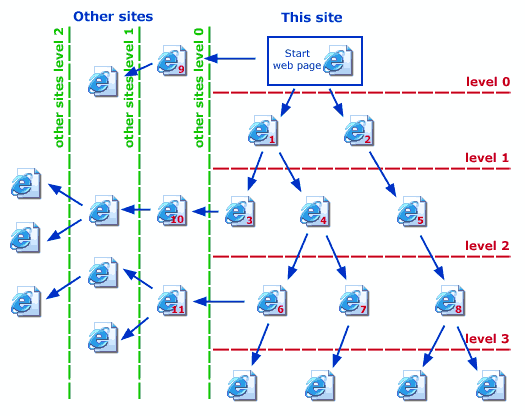

Set the number of levels.

Depending on your needs find below the samples of how many levels you should set in the Grabber.
According to the picture, Level 0 for the current site and Level 0 for other sites means that only the start page will be explored. All the files which the start page contains (pictures, zips, audio, video files, etc.) will be added to the list of the grabber.
Level 1 for this site and Level 0 for other site means that the Grabber will explore the start page and web pages number 1 and 2.
Level 3 for this site and Level 1 for other sites means that the Grabber will explore the start page as well as web page number 1, 2, 3, 4, 5, 6, 7, 8 of the current (this) site and pages 9, 10, 11 from other sites, etc.
Please note that the number of levels relates to web pages only. For downloaded files linked from a page, the Grabber doesn't check levels set on this step. There are other filters for downloaded files which can be set on the next step.